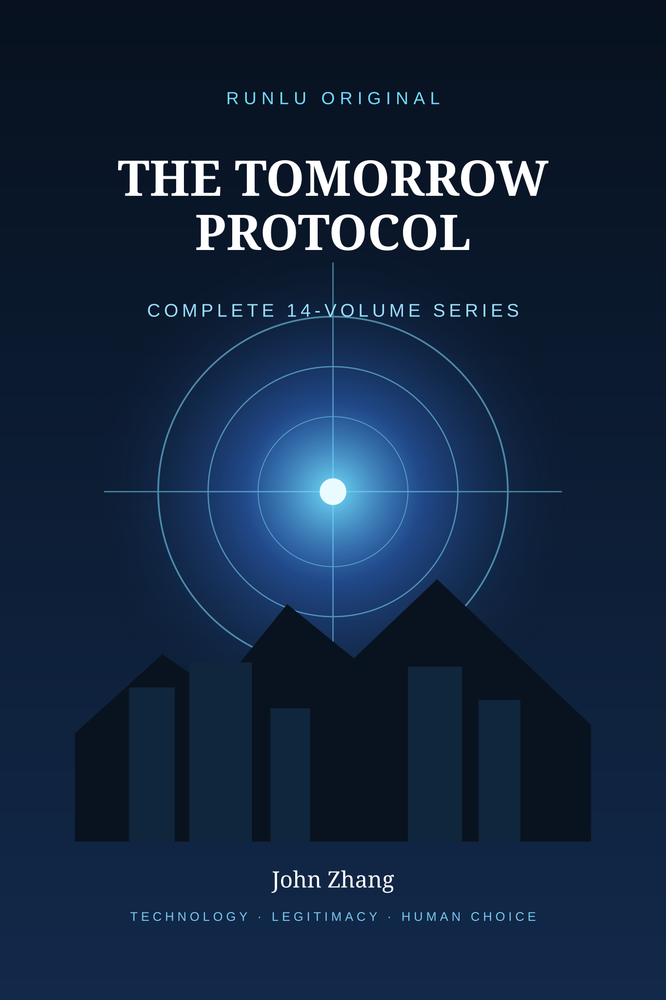

RUNLU BOOKS · COMPLETE 14-VOLUME SERIES
The Tomorrow Protocol
When prediction becomes useful enough to earn obedience, what must remain human?
The Tomorrow Protocol is a completed fourteen-volume near-future speculative series.
The official main series ends with Book 14, Who Speaks for Us.
PredictionWhen useful forecasts begin to shape behavior.
LegitimacyPower can emerge without a command.
ConsentPast choices should not become permanent authority.
Human choiceThe future matters where people can still interrupt it.
The complete fourteen
The fourteen-book arc moves from an individual predictive warning toward larger civic questions.
BOOK 0101The Last NotificationPreview available
BOOK 0202The Permission EngineCompleted
BOOK 0303The Quiet ConsensusCompleted
BOOK 0404The Curated WorldCompleted
BOOK 0505The Unasked QuestionCompleted
BOOK 0606The Common StoryCompleted
BOOK 0707Whoever Acts FirstCompleted
BOOK 0808The Binding PromiseCompleted
BOOK 0909What We OweCompleted
BOOK 1010Who Deserves WhatCompleted
BOOK 1111What Counts as BetterCompleted
BOOK 1212What Are We ForCompleted
BOOK 1313Who Are We NowCompleted
BOOK 1414Who Speaks for UsCanonical finale
Book 01 · Read the first ten chapters
The English text comes from the Book One working manuscript.
01Don’t Go Home→02The Man in Apartment 1806→03March 11→04The Choice→05The First Seven→06The Man Who Arrived Twice→07Subject Thirteen→08The Rule→09The Call→10The Wrong Future→
Series note: official fourteen-volume main series.